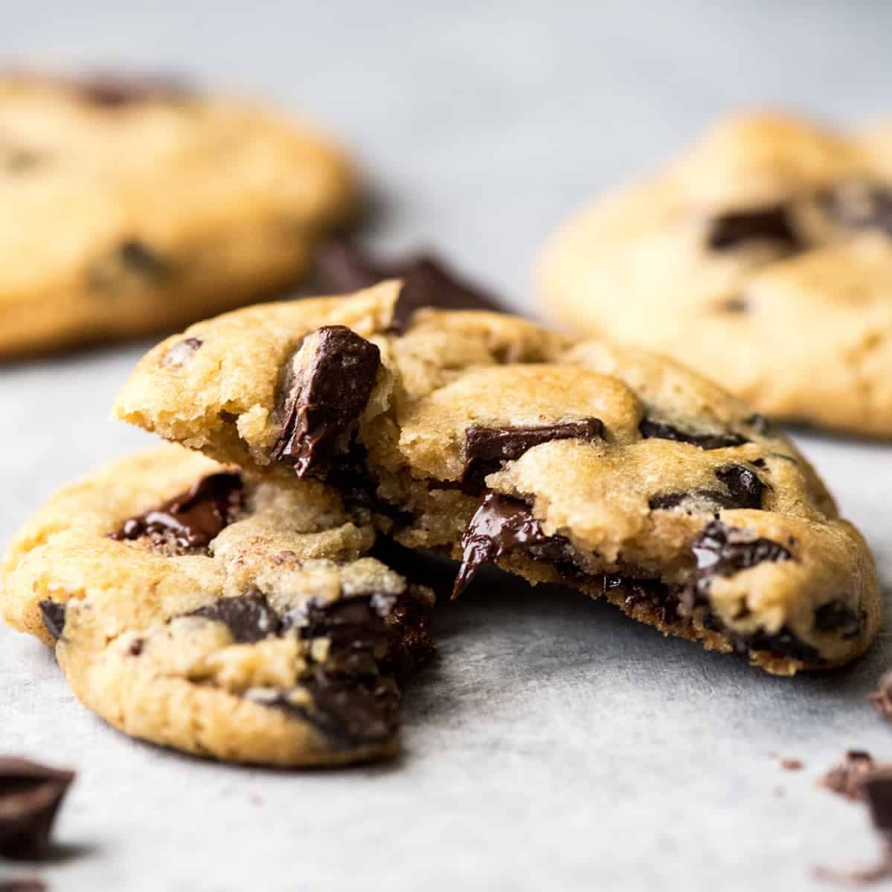

Learn to make delicious, soft, and warm cookies from scratch at home! The recipe is easy to follow along with for beginners. Have fun making the cookies and then enjoy them once finshed with a friend! This recipe is great for just yourself or for a family gathering!

Links to everything needed for this recipe!